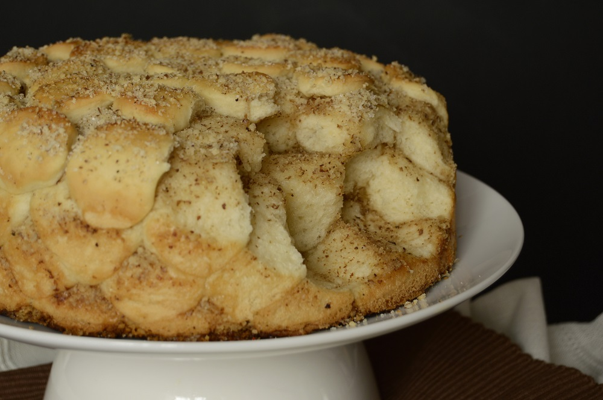

Aranygaluska
Hozzávalók:
A tésztához
- 50 dkg finomliszt
- 2 dkg friss élesztő
- 7 dkg vaj
- 3 dl tej
- 1 púpozott ek cukor
- 2 db tojássárgája
- 1 ek vaj (a forma kikenéséhez)
A szóráshoz
- 30 dkg dió (darált)
- 15 dkg cukor (ízlés szerint)
- 10 dkg vaj
A sodóhoz
- 7 dl tej
- 4 db tojássárgája
- 1 db vanília (kikapart magja)
- 6 dkg cukor
- 1 púpozott ek finomliszt
Elkészités:
- A szobahőmérsékletű lisztet tálba szitáljuk.
- A tejet meglangyosítjuk, elmorzsoljuk benne az élesztőt, hozzáadjuk a cukrot, és felfuttatjuk.
- A vajat megolvasztjuk, a tojássárgákkal és a felfuttatott élesztővel együtt a liszthez adjuk, és kemény munkával hólyagosra gyúrjuk. Tetejét meglisztezzük, letakarjuk, és duplájára kelesztjük.
- Ha kész, ujjnyi vastagra nyújtjuk, és picipogácsaszaggatóval kiszaggatjuk.
- Egy kapcsos tortaformát vastagon kivajazunk, a vajat megolvasztjuk, a diót és a cukrot kikeverjük.
- Fogjuk a pogácsákat, beleforgatjuk az olvasztott vajba, meghempergetjük a cukros dióban, és a formába sorakoztatjuk őket.
- Ha az egész kész, előmelegített sütőbe toljuk letakarva (a dió könnyen odakap).
- Amíg sül, elkészítjük a sodót: A tejet a vaníliarúd kikapart magjával felforraljuk, majd levesszük a tűzről.
- Egy másik lábosban kikeverjük a tojássárgákat a cukorral és a liszttel.
- Apránként hozzáadva a vaníliás tejet, kis lángon sűrűre főzzük (nem nagyon sűrűre, nem puding!).
- Megvárjuk, míg a kész aranygaluska is hűl egy kicsit, majd széttépjük (nem vágjuk), és nyakon öntjük a sodóval.
Vissza a főoldalra